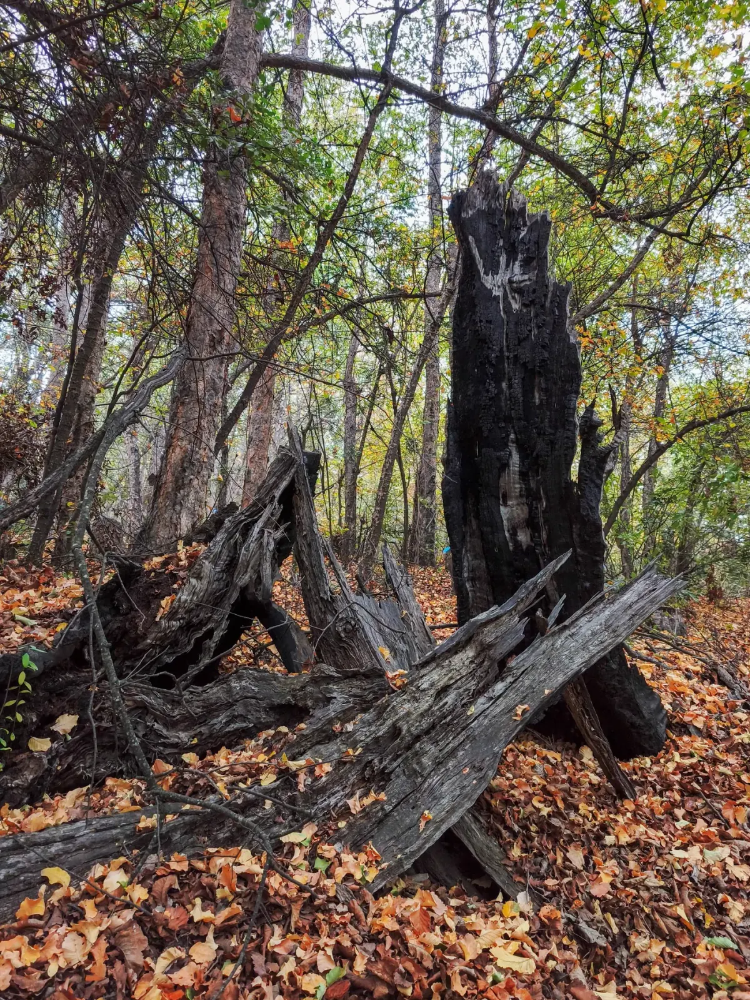

Caso preliminar a validar
Restauración ecológica asociada a compensación ambiental en Colbún
Proyecto de compensación ambiental asociado a infraestructura de transmisión eléctrica. La experiencia permitió articular diseño técnico, producción vegetal, ejecución en terreno, monitoreo y evaluación posterior de resultados.
Desafío
Implementar una medida de compensación ambiental en un sector cercano a infraestructura de transmisión eléctrica, considerando condiciones del sitio, requerimientos técnicos y monitoreo en el tiempo.
Respuesta aplicada
El proyecto integró diseño técnico, abastecimiento de plantas, ejecución en terreno y monitoreo. En etapas posteriores, nuevos datos permitieron evaluar el desempeño de la restauración y generar aprendizajes para futuros trabajos.
Participación por empresa
Consultora Nothofagus
Diseño técnico, reportabilidad y monitoreos iniciales.
Vivero ECORES
Entrega de plantas según diseño del sitio y objetivos de restauración.
ECORES
Ejecución en terreno de las acciones de restauración.
CiiRES
Análisis de datos posteriores e investigación aplicada sobre el desempeño de la restauración.
Aprendizaje
El monitoreo y análisis posterior permiten evaluar resultados, ajustar criterios y fortalecer nuevas iniciativas de restauración.